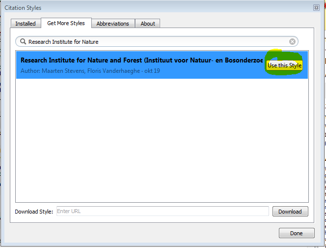
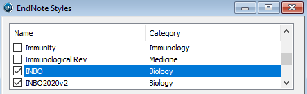

Use of INBO citation style with bibliography managers
We show where to find and how to use the INBO citation style in bibliography managers
The INBO citation style
Most journals, publishers and companies use a specified format for citations and bibliographies. The Research Institute for Nature and Forest (INBO) is no exception.
All bibliography managers provide ways to automate the formatting of citations and bibliographies which greatly facilitates scientific publishing. Depending on the bibliographic manager software, the style formatting rules are stored in specific files. In this tutorial you will learn how to use the INBO citation style in EndNote, Mendeley and Zotero bibliography managers.
EndNote uses a *.ens file to store the style formatting rules, whereas
Mendeley and Zotero use the open standard *.csl (Citation Style
Language). EndNote, Zotero and Mendeley
have recommended ways of finding and installing these files and will
always point to the latest version of the style files when properly
installed. This is explained in Use in bibliography
managers.
In case you want to manually download the latest official CSL file of the INBO citation style (not the recommended way; better use your bibliography manager): it is available at the CSL style repository. In case older versions are needed, they can be obtained from successively numbered releases from our forked styles repo. To use older versions, you will need to manually download and add the file to your bibliography manager.
The EndNote *.ens file can be downloaded
here
(only accessible for INBO employees).
Curious how the formatted INBO citation style and bibliography look like for various document types? Take a look at these links:
- PDF with English bibliography based on CSL
- HTML with English bibliography based on CSL
- PDF with Dutch bibliography based on CSL
- HTML with Dutch bibliography based on CSL
Use in bibliography managers
Zotero
-
Open Zotero
-
Go to
Edit > Preferences > Citeand click on “Get additional styles…”
-
In the search field in the popup window that opens type “Research Institute for Nature and Forest” and click on the corresponding link
There are good online tutorials that explain how to use Zotero in combination with google docs, MS Word and LibreOffice.
Mendeley
-
Open Mendeley
-
Go to
View > Citation styles > More styles > Get more styles -
In the search field type “Research Institute for Nature and Forest” and click “use this style”

Guidelines on how to use Mendeley in combination with MS Word or LibreOffice can be found here.
EndNote
-
If you do not already have a folder where style files are stored, create one (make sure you have read and write rights and choose a good location that will not be accidentally deleted (not on your desktop)
-
In EndNote go to
Edit > Preferences > Folder Locations > Style Folderand choose the folder containing the style file(s) -
Go to
Edit > Output Styles > Open Style Managerand activate the INBO style and other styles you want to use (check the box)
-
The styles carry a name and version number, so they can be used at will.
-
The INBO style can now be used in Windows Word through the EndNote add-on.

The University of Melbourne provides good guidelines on how to use EndNote in combination with MS Word.